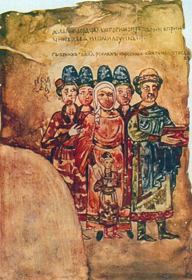
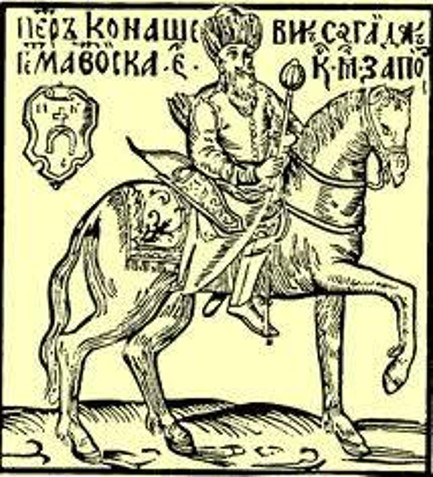
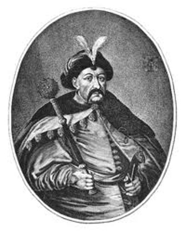

Мініатюри
Мініатюри. Гравюри. Портрети
Мініатюри. Гравюри. Портрети
Головна сторінка
Пам'ятники.Скульптури
Мініатюри. Гравюри. Портрети
Памятки давньої історії України
Ікони
Євангеліст Лука. Мініатюра з Остромирового Євангелія. 1056-1057 роки.

Родина князя Святослава Ярославича. Мініатюра з «Ізборніка». 1073 р.
Гравюра «Іван Мазепа среди своих добрих справ».

Портрет Петра Конашевича-Сагайдачного з книги «Вірші на жалісній льох шляхетного Рицар Петра Конашевича-Сагайдачного»

Портрет Богдана Хмельницького. Гравюра В. Гондіуса. Середина XVII ст.